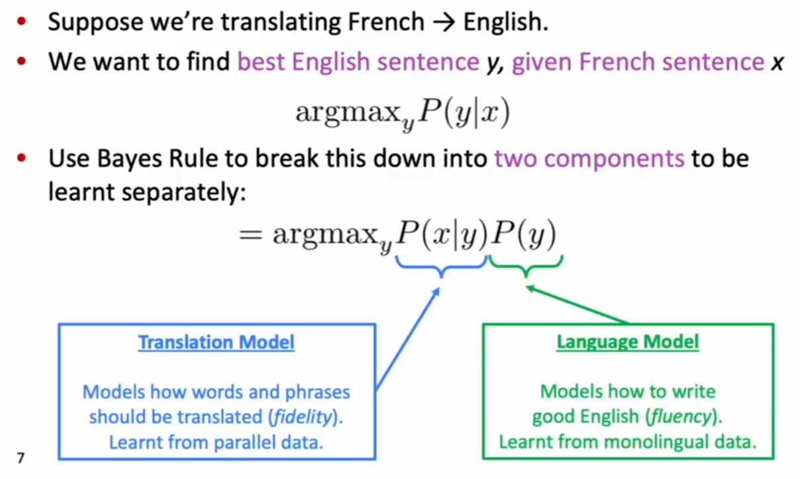
Alignment
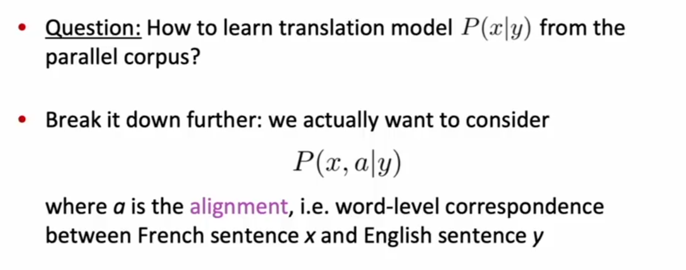
Alighment Can be Complex! (Appendix 1)
Back in the day we used statistical machine translation (Appendix 2)
Neural Machine Translation
Sequence to Sequence (2014).
Seq2seq can also do many other NLP tasks-
- Summarization (Long text -> short text)
- Dialgoue (Previous utterances -> next utterance)
- Parsing (input text -> output parse as sequence)
- Code generation (Natural Language -> Python Code)
Seq2Seq is an example of a conditional language model. The conditional is because its predictions are conditions on the source sentence x. In other words,
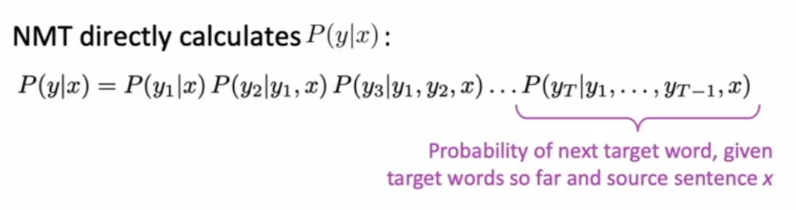
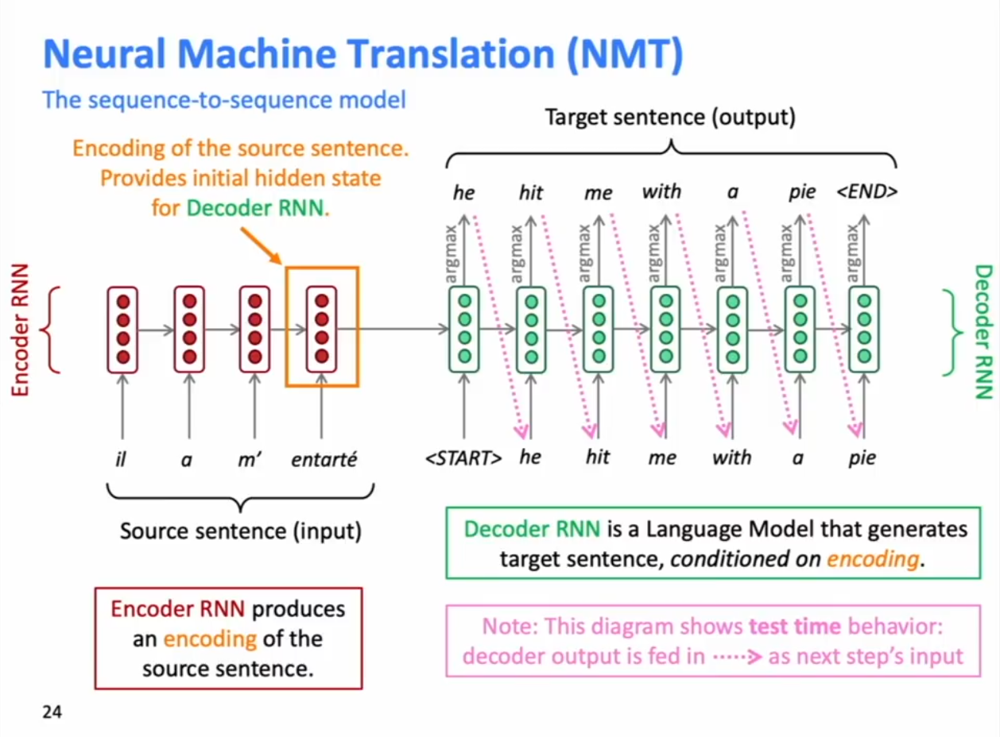
Training NMT systems
Get a big parallel corpus.
Feed source sentence into encoder RNN
Start out the first hidden state of the decoder RNN as the kit hidden state of the encoder RNN, and feed target sentence into decoder RNN.
For every step of the decoder RNN, produce the probability distribution of the next decoded word. Compute a loss over every word of the decoded output sequence as the negative CE of the next word. Average all of the losses to get the total losses for the example. (If the decoder produces <end> too early in training, keep going).
Seq2Seq is trained as a single system and Backprop operates “end-to-end”, from the final losses to the weights of the encoder RNN.
To deal with variable length sentences, we pad and short sentences to a pre-defined max length, and make sure that we don’t use any hidden states that came from the padding.
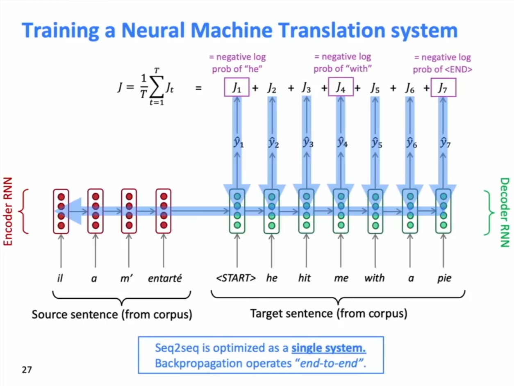
Decoding with Beam Search
The basic decoding method is greedy decoding, but often we do beam search to get better searches.
On each step of the decoder, keep track of the k most probable partial translation (which we call hypotheses)
k is the beam size (in practice around 5 to 10).
A hypothesis y1,…,yt has a score which is its log probability. Scores are all negative, higher score is better. We search for high-(normalized) scoring hypotheses, tracking top k on each step. We do not normalize the scores when computing candidates using beam search.
score(y1,…,yt)=logPLM(y1,…,yt|x)=∑i=1tlogPLM(yi|y1,…,yi−1,x)
Stopping in beam search: When a hypothesis produces <end>, that hypothesis is complete. At this point we place it aside and continue exploring other hypothesis via beam search. We continue beam search until: We reach timestep threshold T, or we have at least n completed hypothesis.
Selecting the final output senquence. When we have our final list of candidate scores, as generally shorter hypotheses have higher scores, to fix this, we must normalize the scores by length (1/t) before picking the final output.
1t∑i=1tlogPLM(yi|y1,…,yi−1,x)
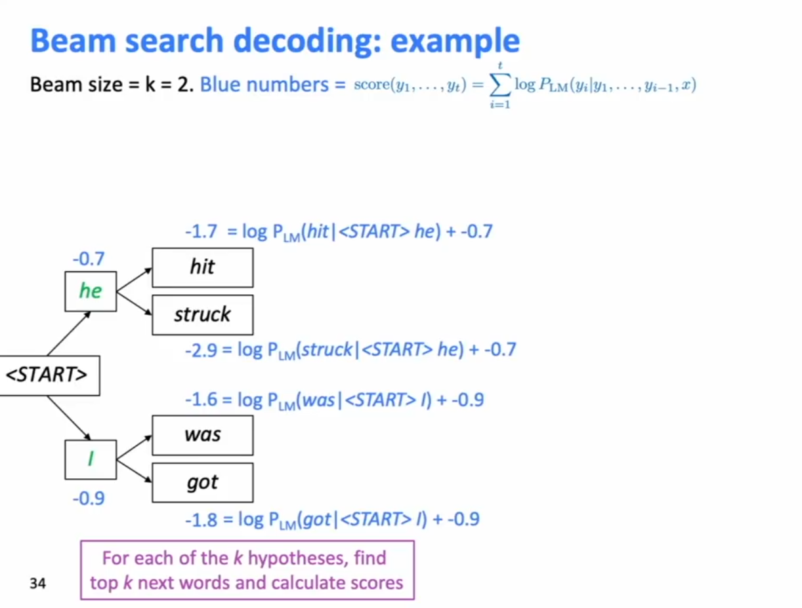
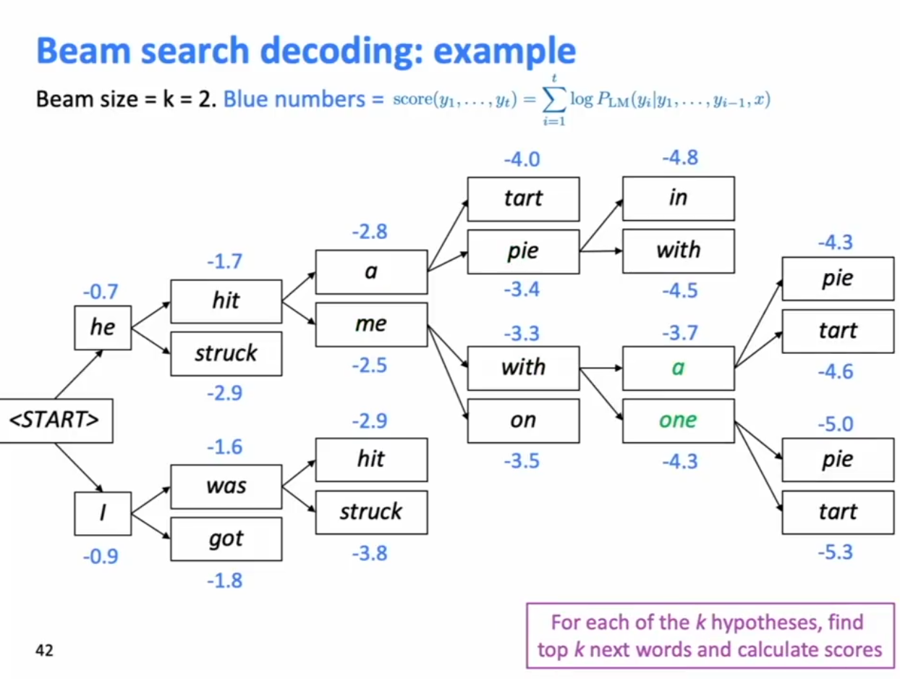
BLEU- Bilingual Evaluation Understudy
Comparison of machine translation and human translation.
Look at all the 1,2,3 and 4 grams that appear in the machine translation, how many of those appeared in at least one human translations? (n-gram precision)
+ penalty for too-short system translations.
Attention solves the seq2seq informational bottleneck problem
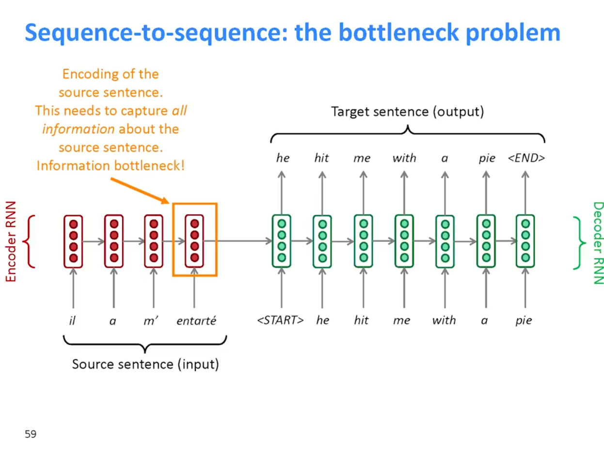
Attention: On each step of the decoder, use a direct connection of the encoder to focus on a particular part of the source sequence. The attention score is basically a dot product.
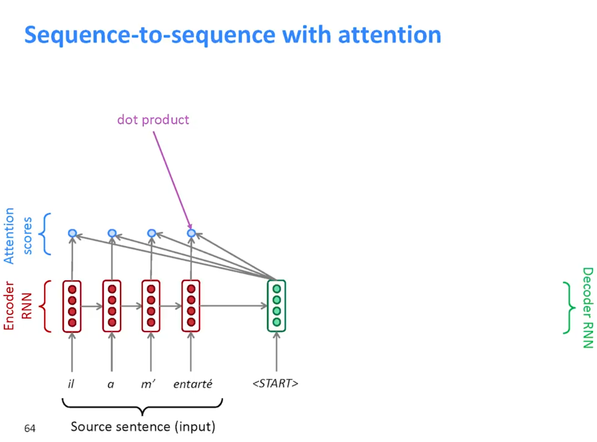
(1) Given a decoder state, we generate the attention score with each encoder state, which is just the dot product.
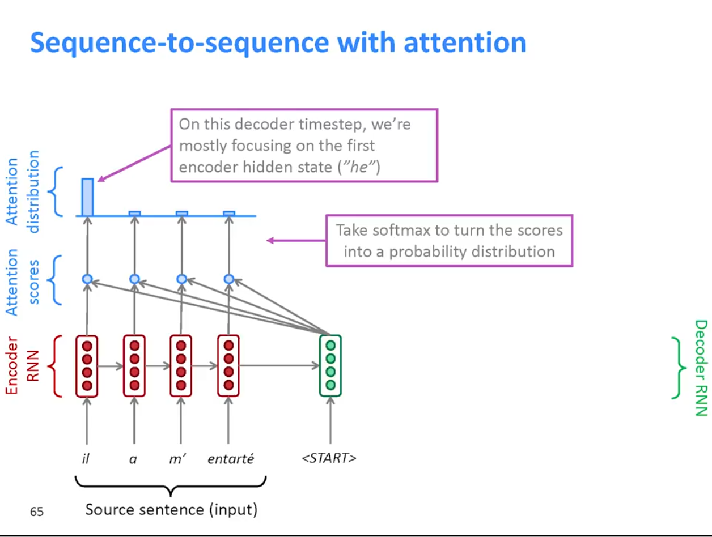
(2) We take the softmax all those hidden states to determine the attention distribution. This is the weighting of importances of encoder states to the current decoder state.
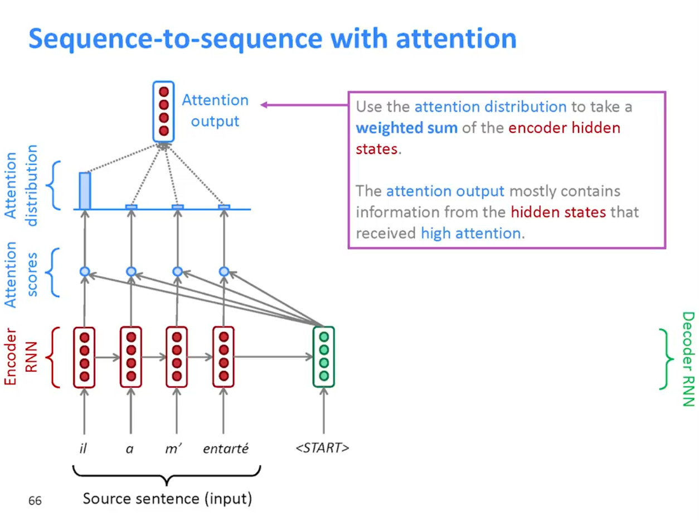
(3) We then form the attention output, which is the weighted interpolation of the source encoder hidden states weighted by the attention distribution.
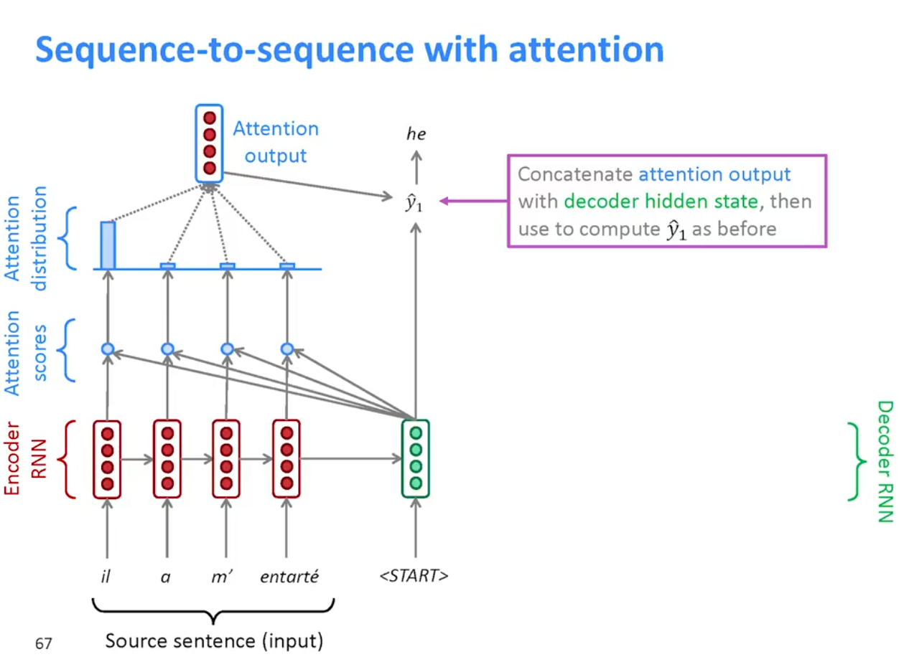
(4) Concatenate attention output with decoder hidden state and use model to predict the next word. The dependency of the next word on the attention part of the full concatenated state is learned from training data.
(Optional)
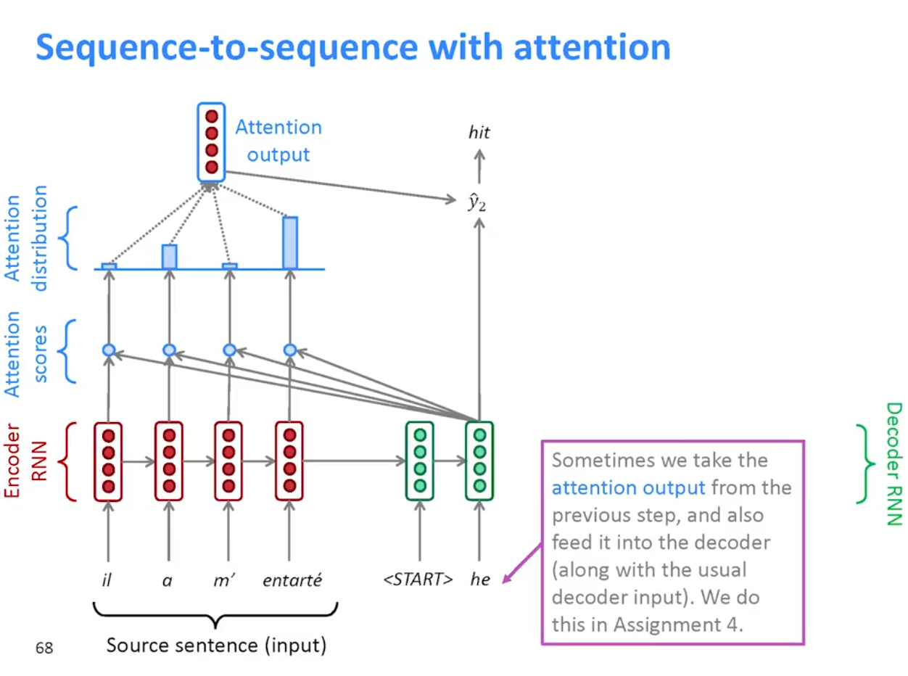
(5- optional) Sometimes we take the attention output encoding from the previous step and also feed it into the decoder along with the usual decoder input.
Attention is soft alignment.
Attention in equations:
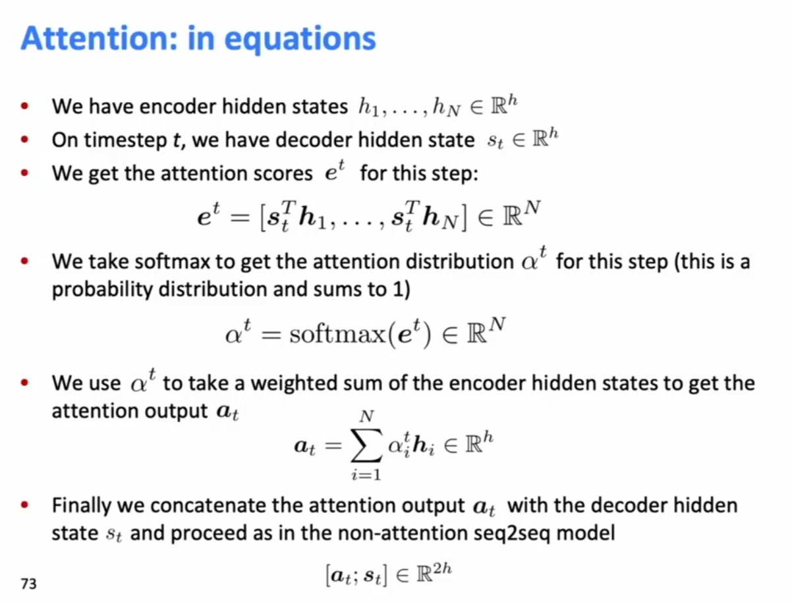
Generalized Attention
Given a set of vector values and a vector query, attention is a technique to compuite a weighted sum of the values dependent on the query. We say the query attends to the values.
Interpretation of Attention
- The weighted sum is a selective sumamry of the information ciontained in the values, and the query determines which values to focus on.
- Or, attention is a way to ontain a fixed-size reprenetaion of an arbitrary set of representations (the values) dependent on some other representaiton (the query)
Ex) In seq2seq, the decoder hidden state is the query and they attend to all the encoder hidden states, which are the values.
Variants of Attention
In all attention variants we have some values h1,...,hN∈Rd1 and a query s∈Rd2
- Compute the attention scores e∈RN
- Take softmax to get the attention distribution α
α=softmax(e)∈RN
- Use the attention distribution to take the weighted sum of values
α=∑i=1Nαihi∈Rd1
The variants of attention are as follows:
-
Basic Dot Product Attention: ei=sThi∈R
Note: this assumes the size of your key (d2) and the size of your values (d1) is the same.
- This is the fastest and most space saving (O(d1)) but captures the least amount of attention.
-
Multiplicative attention: ei=sTWhi∈R
- where W∈Rd2×d1 is a learned Weight matrix.
-This is popular, more slow but captures the least amount of attention
-
Simplified Variants of Multiplictive Attention (From FusionNet)
- Sij=cTiWqj is the original multiplicative attention.
- Sij=cTiUTVqj where U,V are low rank
- Sij=cTiWTDWqj where W is low rank and D is diag
- Sij=Relu(cTiWT)DRelu(Wqj) FusionNet Attention because of a heuristic 'non-linearities are very important in deep learning'.
- Space complexity of the similified variants are O((d1+d2)d3) where d3 is the dimensionality of the reduced dimension diagonal.
-
Additive Attention (aka MLP Attention): ei=vTtanh(Wihi+w2s)∈R
- where W1∈Rd3×d1, W2∈Rd3×d2 are learned weight matrices and v∈Rd3 is a learned weight vector.
- d3 (the attention dimensionality) is a hyperparameter
- This is essentially a shallow neural net put between every two positions in the context and the query to get the similarity score. Space is O(d1d2d3).
-
Deep Neural Net between Context and Query Attention
- You can also use a deeper neural net between context and query embeddings to calculate the similarity score, but this is prohibitively costly and no one does this.
Benefits of Attention:
- Significantly improves NMT performance,
- Solves the Bottleneck problem
- Helps with the Vanishing Gradient Problem (direct attention connections reduces distance just like shortcut connections)
- Provides Interperability
Essential Tips to Training RNN Models
1. Use an LSTM or GRU
2. Initlaize recurrent matrices to be orthogonal
3. Intialize other matrices with a sensible (small!) scale
4. Initalize forget gate bias to 1: default to remembering
5. Use Adam or AdaDelta or AdaGrad
6. Clip the norm of the gradient: 1-5 seems to be a reasonable threshold when used together with Adam or AdaDelta
7. Either only dropout vertically or look into using Bayesian Dropout (Gal and Gahramani - not natively in PyTorch yet unf)
8. Be patient!
Experimental Strategy:
Work incrementally!
Start with a very simple model and get it to work
Add bells and whistles one-by-one and get the model working with each of them (or abandom them)
1. Initially run on a tiny amount of data
- You will see bugs much more easily on a tiny dataset
- Something like 8 examples is good
- Often synthetic data is useful for htis
- Make sure you can get 100% on this data, other wise your model is definitely not powerful enough or it is broken
2. Then run your model on a large dataset
- It should still score close to 100% on the training data after optimization, otherwise, you probably want to consider a more powerful model. Overfitting to training data is not something to be scared of and is to be expected.
- However, since you want generalization performace, regularize your model so it doesn't overfit on dev, using generous dropout.
Research ideas:
Learning Temporal Events In text - what came before, what came after
Look at the ‘residual encodings’ in NMT systems - the encoding remaining in the decoder hidden state after <EOS> is produced. These encodings must capture something inherent in the language pair.
Appendix 1:
Note: Calculating softmaxes at the end ismore expensive than doing the RNN computation - because the vocab size is huge!
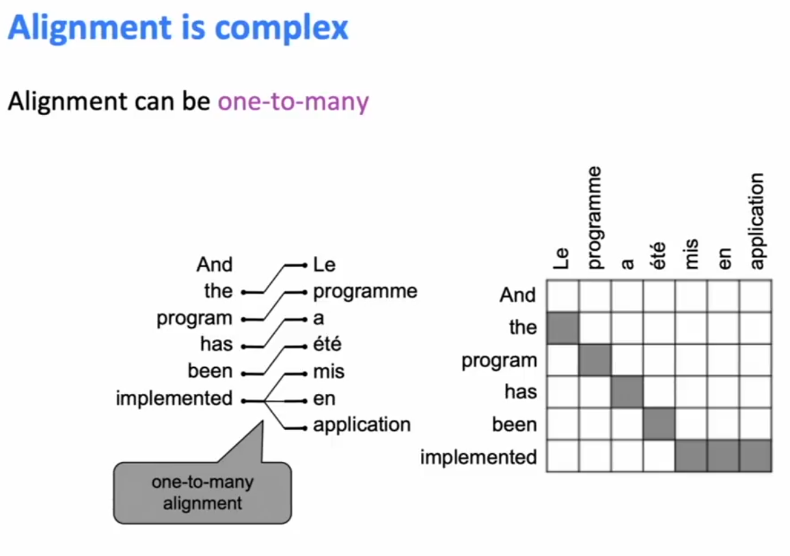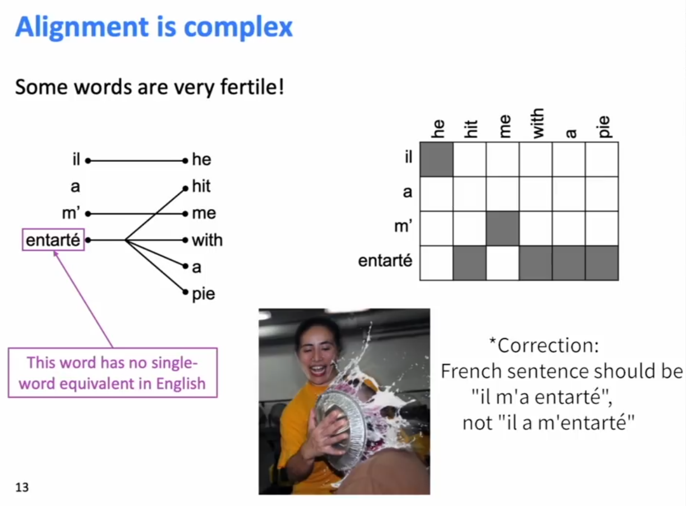
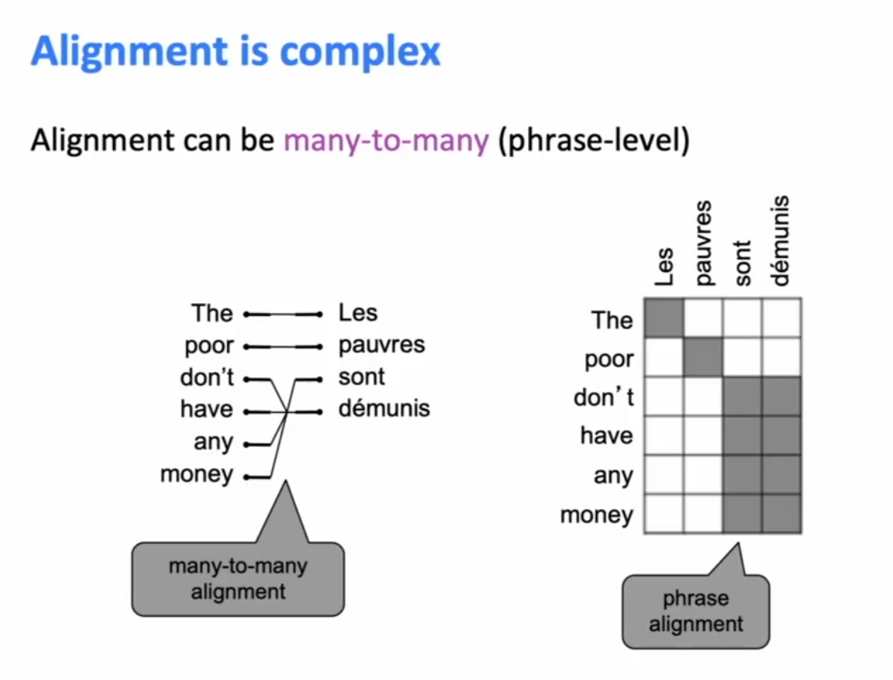
Appendix 2: Statistical Machine Translation
Essentially, form many candidate output sentences based on different possible the direct translations of words and different alignments. The number was too much to put in memory so candidates with low probability are pruned out.
SMT had lots and lots of subcomponents for feature engineering, using lots of tables etc.
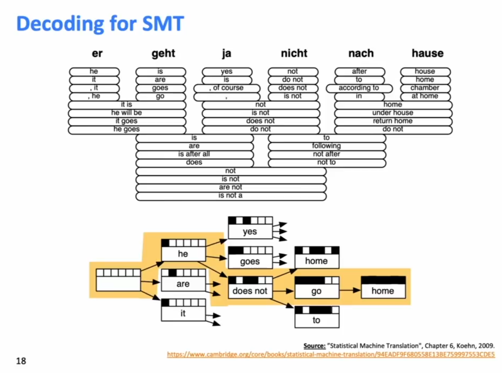
Appendix 3: How to deal with Unknown tokens in vocabualary:
- Hierarchical softmax: tree-structured vocabulary, allows you to use a larger vocabulary with less space
- Noise-constrastive estimation: binary classification
- Train on the subset of the vocabulary at a time, test on a smart set of possible translations
- Use attention to work out what you are translating, and do a dictionary lookup or simple transform of the word found by attention.
BLEU is a weighted geometric mean, with a brevity penalty factor added, on n-grams. Note that it's precision oriented, so p1 etc is the proportion of 1-grams in the machine translation also in the reference translation, and so on.
Note that in BLEU, you are are only allowed to use each 1-gram in the regerence translation once to match the machine translation for a given 1-gram level, and similary for all levels of n.
n=1,2,3,4 us ually used.
exp( 0.5 * log p1 +
0.25 * log p2 +
0.125 * log p3 +
0.125 * log p4 -
max(words-in-refernece / words-in-machine - 1, 0) )